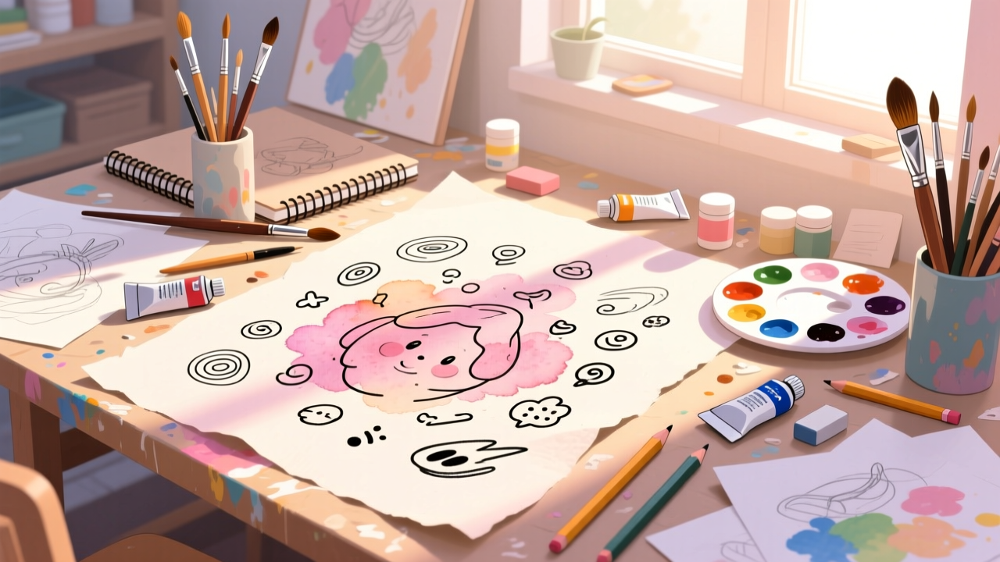

分享 3 組 ChatGPT 與 Gemini 手寫筆觸風格指令，生成有溫度的 AI 藝術作品

越來越多人使用 AI 進行創作，Threads 網友 jamiee._c 分享了 3 組超美的手繪風格 Prompt 指令，可同時用於 ChatGPT 和 Gemini，能生成帶有溫度的手繪風格作品。
原指令用於生成「想像中的你」的韓系插畫風格照片。用戶也可以提供自己照片，再調整 Prompt 讓 AI 以照片為參考生成結果。
適用途徑：個人社羣頭像、Profile 圖片
使用方法：可以自己提供照片，AI 會根據照片生成符合風格的結果
這組會呈現原子筆手寫的塗鴉效果，就像在課本上亂寫亂畫的感覺。適合套用在社羣截圖或圖片上，加入像朋友吐槽、老師批改般的紅筆註解與塗鴉效果。
使用方法：需要提供一張圖片讓 AI 在上面創作出結果
這組風格適用於旅遊照片、日記、手帳。AI 會根據你給的照片，圈出裡面的元素，然後分析該元素並給一些心情小語。
適用途徑：旅遊紀錄、生活日記、Instagram 限時動態
效果：像在手帳上寫心情筆記，帶有溫度和情感
想要生成符合自己外觀的風格，可以先提供照片給 AI 作為參考，再套用 Prompt 指令。
可以將同一指令分別丟到 ChatGPT 和 Gemini，比較 image 2.0 和 Nano Banana 2.0 的生成效果差異。
如果第一次生成效果不理想，可以根據結果再調整指令中的細節描述。
Prompt 1（韓系個人照）：生成帶有韓系插畫感、角色特徵明確、筆觸細膩的個人形象照，適合 Profile 頭像。
Prompt 2（手寫塗鴉）：套用在社羣截圖或圖片上，加入紅筆註解與塗鴉效果，像朋友吐槽般幽默。
Prompt 3（手帳紀錄）：適合旅遊照、生活日記，讓 AI 圈出畫面元素並加上有溫度的心情小語，適合 IG 限時動態。
這 3 組指令都不是單純讓 AI 生成圖片，而是讓照片多了一層「手作感」與「情緒感」。